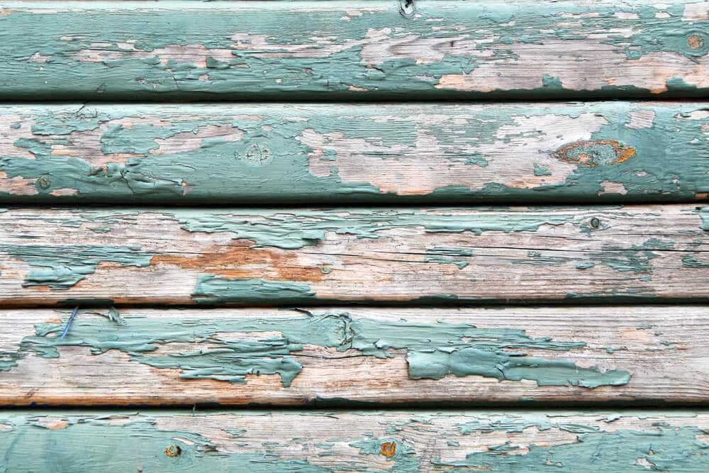
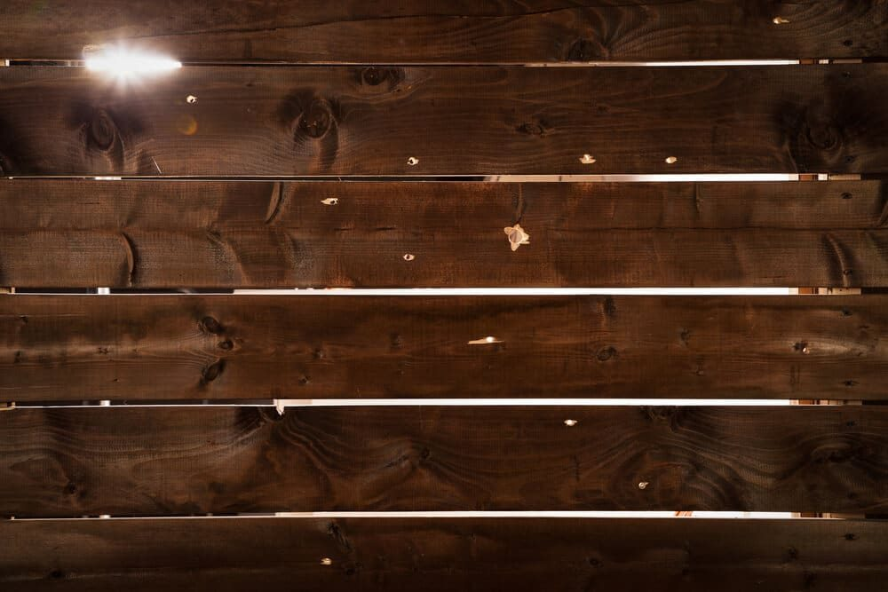
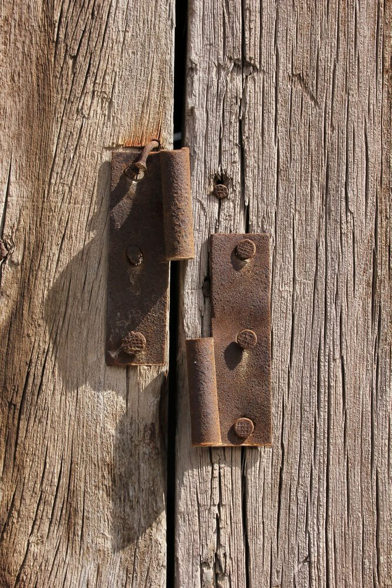

In This Guide
- Faded or peeling finish, leaning posts, cracked or rotting boards, pest damage, and loose hinges are the five main warning signs.
- Catching a problem early usually means a small repair, while waiting can turn it into a bigger and costlier one.
- A yearly walk along the fence line, plus a check after major storms, is the easiest way to spot trouble.
- A few damaged boards can usually be repaired, but widespread rot or many failing posts often point to replacement.
A fence in good shape adds to the look of a property. One that wobbles, peels, and sags does the opposite, and it tells everyone who walks by that the yard has been neglected. The good news is that fences usually give clear warnings before they fail.
This guide from Big Easy Fence covers five signs that it is time to act, how to check your fence yourself, and how to tell when a job has moved from a small fix to fence repair that needs a professional.
Why Maintenance Still Matters
People sometimes wonder whether fence maintenance is worth the trouble. It is, for the same reason you change the oil in a car. Taking care of a fence extends its life and puts off big repairs for years. A fence that is cleaned, treated, and inspected on a regular schedule almost always outlasts one that is ignored.
Some damage cannot be prevented. Hurricanes and severe storms can wreck even a well-kept fence. In most cases, though, upkeep keeps small issues small, and that is where the savings are.
Five Signs a Fence Needs Repair
1. Fading, Peeling, and Worsening Dirt

The earliest and most visible sign is a change in the fence surface. On a wood fence, that means paint or stain that fades, flakes, or peels, leaving bare wood exposed to rain. On a chain link or steel fence, discoloration often means rust, which shows up fast in wet weather. On vinyl, it is often dirt, mildew, and algae.
These problems start out cosmetic, but they open the door to worse ones. Bare wood soaks up water, and rust eats into metal. A thorough cleaning and a fresh finish is the fix, and our guide to choosing the best wood stain for fences can help with the second part. If the surface is beyond a cleanup, it is time for repair.
2. Leaning or Loose Posts
Posts are the backbone of the fence, and the panels depend on them. When a post starts to lean, the fence around it will follow. Common causes are strong wind, soft soil, and water pooling at the base, all common in Louisiana.
Do not wait on a leaning post. Reinforcing the base or adding brackets early can save the run, but a post that has already rotted or cracked usually needs to be replaced. A professional can tell which one you have.
3. Broken, Cracked, or Rotting Boards

A broken board is easy to spot, and it often stands out from across the yard. On wood and vinyl fences, watch for holes, cracks, dents, and soft or crumbling spots. Some wear is normal as a fence ages, and a single damaged board is a job many homeowners can handle with basic tools.
If you do not have the tools or the confidence, a local repair crew can swap boards quickly. Catching damage early keeps it from spreading to the boards and rails around it.
4. Pest Damage
Wood-eating insects such as termites go after fences, and Louisiana's warm, damp climate suits them. Warning signs include swollen or soft boards, mud tubes, sawdust-like debris, and moisture damage. You can test a post by pushing a screwdriver into it. If the tip sinks in easily, the wood is soft.
Insect damage spreads fast. If it is limited to a spot or two, a repair may be enough, but a widespread problem can mean it is time for a new fence. A pest control professional can confirm the cause.
5. Squeaky or Loose Hinges

Gates and fence sections rely on metal hardware that needs an occasional drop of lubricant. When hinges dry out, they squeak, stick, and loosen. A gate that sags or will not latch is also a security problem, since it lets people, pets, and animals through. Tightening screws, adding lubricant, and replacing worn hardware usually solves it. A gate that keeps dropping may need its post reinforced.
A Quick Yearly Inspection
You do not need special tools to check a fence. Set aside a little time each year, and again after big storms, and walk the whole line.
- Look at the finish. Note fading, peeling, rust, and mildew.
- Push on the posts. A post that moves easily needs attention.
- Check the boards. Look for cracks, holes, soft spots, and loose fasteners.
- Test the gates. Open and close them, and listen for squeaks or scraping.
- Check the base. Clear plants and debris, and look for standing water.
Repair or Replace?
Most fence problems can be repaired if you catch them in time. This table gives a rough guide.
| Problem | Usually Repairable | May Need Replacement |
|---|---|---|
| Boards | A few cracked or loose boards | Rot or damage across many boards |
| Posts | One leaning post with sound wood | Several rotted or cracked posts |
| Finish | Fading or peeling that has not reached the wood | Wood softened by long exposure |
| Pests | Damage limited to a small area | Damage spreading through the structure |
| Hardware | Loose or dry hinges and latches | Gate frame or post too weak to hold |
A stronger build cuts down on repairs to begin with. Our guide to the best ways to strengthen a fence covers what to do.
Getting the Fence Fixed
If your fence shows one or more of these signs, do not put it off. Small repairs are quick, and they cost far less than replacing a whole run after the damage spreads. When a repair is bigger than a weekend job, or when you are not sure how bad it is, a professional can inspect the fence and give you an honest recommendation. Our residential fencing services cover repairs and new installs, and a free estimate is a good way to start.
Think Your Fence Needs Work?
Tell us what you are seeing and we will help you figure out whether it is a quick fix or something bigger.